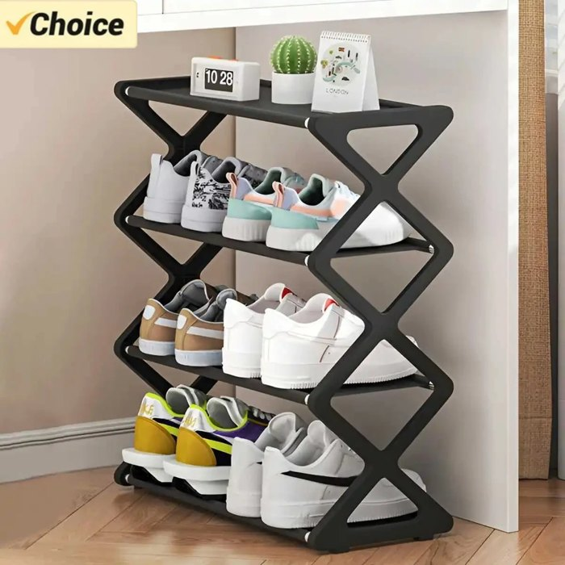

NICHT FREIGEGEBENER PRODUKTENTWURF
Keine eBay-Veröffentlichung. Fehlende Dokumente und Prüfpunkte bleiben offen. Versand und Gewinn sind nur Kalkulationswerte, keine Checkout-/Gewinnbestätigung.
AliExpress: 1005010796812930

(Produktbeschreibung) Dieses 4-stufige X-förmige staubdichte Schuhregal ist ein platzsparendes Muss für ein aufgeräumtes Zuhause!Hergestellt aus robusten Stahlrohren (glänzend schwarz lackiert) und ausgestattet mit einer staubdichten Stoffschicht pro Ebene, hält es Ihre Schuhe sauber und maximiert die Lagerkapazität auf kleinen Flächen.Mit den Maßen 42 cm (L) × 18,5 cm (B) × 49,2 cm (H) passt dieser kompakte Organizer perfekt in Eingangsbereiche, Schlafzimmer, Balkone oder enge Ecken.Seine einzigartige X-Rahmen-Struktur sorgt für Stabilität, ohne zusätzlichen Platz auf dem Boden einzunehmen.Kein Werkzeug für die Montage erforderlich – die Einrichtung ist in wenigen Minuten abgeschlossen!Es kann 8-10 Paar Schuhe (Turnschuhe, Lederschuhe usw.) aufnehmen.), wodurch Ihr Schuhwerk organisiert und leicht zugänglich bleibt. 1. Platzsparende X-Struktur Das einzigartige X-förmige Rahmendesign nutzt den vertikalen Raum optimal aus, perfekt für kleine Wohnungen/Eingangsbereiche – Schluss mit überfüllten Böden! 2. Staubdichte Schutzschicht Jede Ebene ist mit einer staubdichten Stoffabdeckung ausgestattet, die verhindert, dass sich Staub auf den Schuhen ansammelt, und Ihre Reinigungszeit verkürzt. 3. Werkzeuglose Schnellmontage Einfacher Aufbau + klare Anweisungen: Der Zusammenbau ist in nur 3-5 Minuten erledigt, selbst für Anfänger oder Personen, die komplexe Aufbauten nicht mögen. 4. Robustes Stahlrohrmaterial Die robuste Stahlrohrkonstruktion gewährleistet eine hohe Tragfähigkeit und hält schwere Schuhe (Sneaker/Stiefel) sicher, ohne zu wackeln. 5,4-stufiges Regal mit großer Kapazität Kompakte Größe, aber großer Stauraum: bietet Platz für bis zu 8-10 Paar Schuhe und sorgt für Ordnung in Ihrem Eingangsbereich/Schlafzimmer.
| Rahmenmaterial | Metall |
|---|---|
| Ursprung | CN (Herkunft) |
| Funktion | faltbar |
| Material | PP |
| Typ | Schuh-Aufhänger |
| Choice | yes |
| SKU | Quelloptionen | Bestand | Quellpreis EUR | Versandprognose EUR | Verkaufspreisprognose EUR |
|---|---|---|---|---|---|
| 12000053535293408 | {"Farbe": "4 Layer C"} | 64 | 6.49 | nicht verifiziert | nicht berechnet |
| 12000053535293407 | {"Farbe": "4 Layer A"} | 74 | 13.29 | 1.99 | 41.99 |
Breite, Höhe, Länge